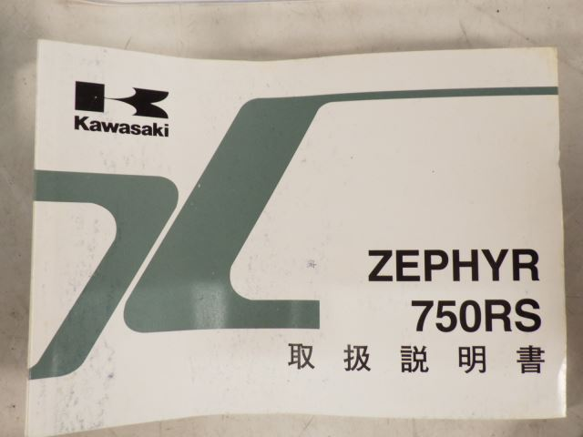

1. — ZEPHYR 750
Лот № 2264487

source_lot_id: 2264487
manufacturer: —
model: ZEPHYR 750
year: —
frame_number: ZR750C-315114
mileage_km: 31750
overall_grade: 4
auction_house: BDS
auction_location: Kanto Ranked
auction_date: 14.10.2026
auction_lot_number: 35
original_comment: —
translated_comment: —
source_url: https://projapan.ru/auction/lot/2264487
Инспектор — 53 записей
| Раздел | Компонент | Оценка | Замечание |
|---|---|---|---|
| Двигатель | — | 4 | — |
| Двигатель | Двигатель | — | Двигатель несколько мест ржавчины изменение цвета,Plug-cord неоригинальная деталь |
| Двигатель | Крышка | — | Крышка незначительная ржавчина |
| Двигатель | Радиатор | — | Радиатор незначительная ржавчина,Fin вмятина |
| Двигатель | Подтёк масла | — | Нет замечаний |
| Двигатель | Карбюратор | — | Нет замечаний |
| Двигатель | Сцепление | — | Нет замечаний |
| Двигатель | Стартер | — | Нет замечаний |
| Перед | — | 4 | — |
| Перед | Внешняя часть вилки | — | Внешняя часть незначительная ржавчинаpolished |
| Перед | Внутренняя часть вилки | — | Внутренняя часть незначительная ржавчина |
| Перед | Траверса | — | Траверса несколько мест ржавчины |
| Перед | Руль | — | Руль незначительная ржавчина неоригинальная деталь |
| Перед | Переднее колесо | — | Колесо царапины несколько мест ржавчины |
| Перед | Передний тормоз | — | Break незначительная ржавчина,Hose неоригинальная деталь,Master неоригинальная деталь |
| Перед | Передняя покрышка | — | Нет замечаний |
| Экстерьер | — | 5 | — |
| Экстерьер | Верх мотоцикла | — | Нет замечаний |
| Экстерьер | Центр мотоцикла | — | Нет замечаний |
| Экстерьер | Низ мотоцикла | — | Нет замечаний |
| Экстерьер | Бок мотоцикла | — | Sticker изменение цвета неоригинальная деталь |
| Экстерьер | Бак | — | Бак небольшая вмятина,Sticker неоригинальная деталь, Внутренняя частьAll paint |
| Экстерьер | Сиденье | — | Нет замечаний |
| Экстерьер | Хвост | — | Хвост царапины, ручкa царапины незначительная ржавчина |
| Экстерьер | Переднее крыло | — | Переднее крыло царапины |
| Экстерьер | Заднее крыло | — | Задняя часть-fender отсутствует часть |
| Экстерьер | Стекло | — | Нет замечаний |
| Зад | — | 4 | — |
| Зад | Амортизатор | — | Амортизатор несколько мест ржавчины частичная покраска |
| Зад | Маятник | — | Swingarm царапины незначительная ржавчина paintswelled 2 |
| Зад | Цепь | — | Цепь незначительная ржавчина |
| Зад | Звёздочка | — | Звездочка неоригинальная деталь |
| Зад | Заднее колесо | — | Колесо несколько мест ржавчины |
| Зад | Задний тормоз | — | Break незначительная ржавчина Тормозной дискworn-down,Hose неоригинальная деталь |
| Зад | Задняя покрышка | — | Нет замечаний |
| Электроника | — | 5 | — |
| Электроника | Ключ | — | Ключ2 |
| Электроника | Спидометр | — | 31,750K |
| Электроника | Поворотник | — | Поворотник несколько мест ржавчины неоригинальная деталь paintswelled 2 |
| Электроника | Фара | — | подножка неоригинальная деталь |
| Электроника | Аккумулятор | — | Нет замечаний |
| Электроника | Сигнал | — | Нет замечаний |
| Электроника | Фонарь | — | Фонарь царапины |
| Электроника | Зеркало | — | Зеркало неоригинальная деталь |
| Электроника | Глушитель | — | Глушитель царапины незначительная ржавчина |
| Электроника | Выпускной коллектор | — | Exhaust-pipe незначительная ржавчина |
| Рама | — | 4 | — |
| Рама | Основная рама | — | главная рама царапины незначительная ржавчина |
| Рама | Нижняя часть рамы | — | Нижняя часть рамы царапины несколько мест ржавчины paintswelled 2 |
| Рама | Ограничители руля | — | Нет замечаний |
| Рама | Рельс сиденья | — | Сиденьеrail царапины незначительная ржавчина |
| Рама | Подножка для ног | — | Подножка для ног царапины незначительная ржавчина |
| Рама | Подножка для мотоцикла | — | Подножка мотоцикла несколько мест ржавчины |
Торги
observed_at: 2026-10-15T15:02:16.772487
status: продано
starting_price_yen: 980000
current_bid_yen: —
result_price_yen: 1090000